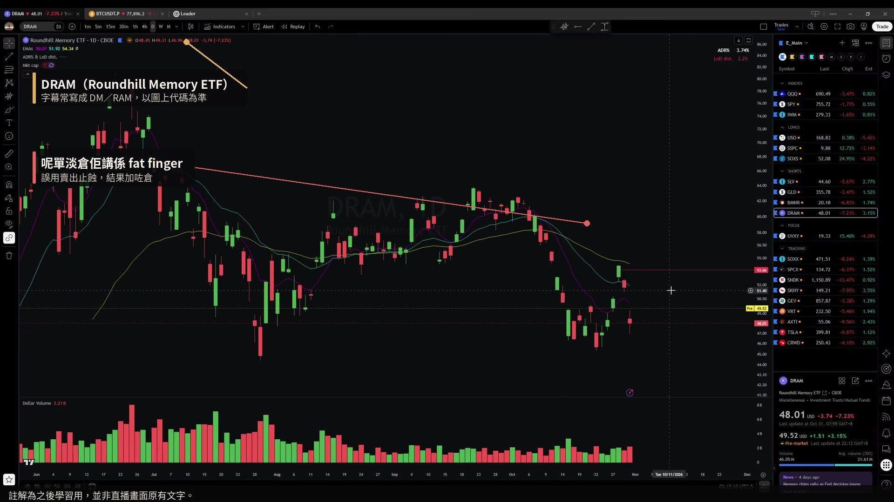
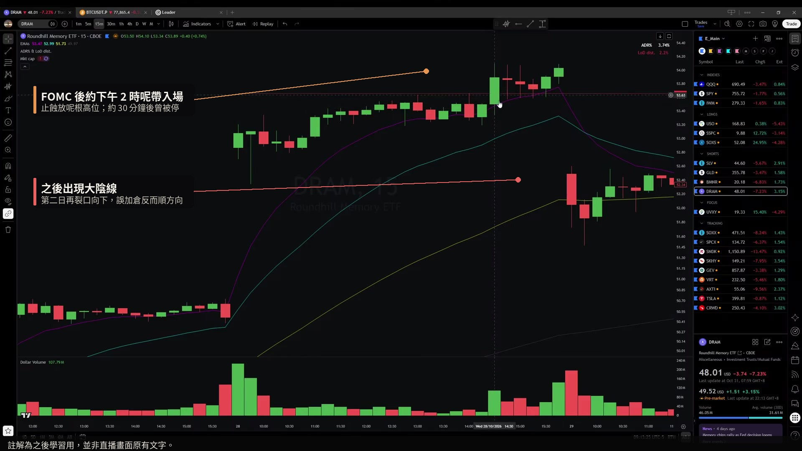
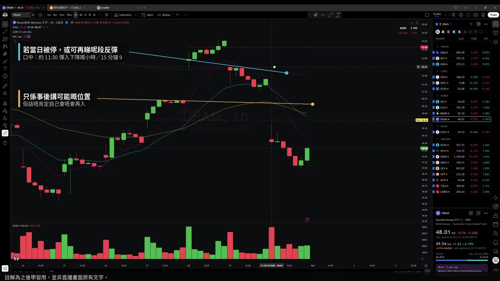

概要
呢單 memory short，係陰錯陽差嘅 fat finger
1:00:26 開始講呢場直播題目裡嘅 DRAM short。佢話自己好幸運，市況有配合，但呢單其實係意外、係 fat finger。回放：FOMC 公布後大約下午 2 時，在呢根 K 淡咗，止蝕放在呢根高位；大約 30 分鐘後曾經被停。到星期四打開 IBKR，先發現自己仍然淡住 DRAM，而且倉位大約係原本嘅兩倍——因為止蝕下錯，用咗賣出止蝕（sell stop），而唔係買入止蝕（buy stop），等於在出場位置再淡多一倍。第二日市場裂口向下而唔係向上；若向上裂口，連同其他淡倉，或會見到約 4% 至 5% 嘅回撤。佢強調回睇好危險、好嚇人，自己並非有意加倉。事後亦講，若當日在上面被停，唔肯定星期四還能不能再入；或許可睇約 11:30 嗰段彈入下降小時 9、15 分鐘 9 嘅位置，但他說不一定會再做。
字幕常把 DRAM 寫成 DM、D、RAM。畫面代碼係 DRAM，全名 Roundhill Memory ETF。講到下單時提到 IBKR，只係原話裡嘅券商名稱。所有回撤同倍數都只係口中約數，畫面睇唔到成交單。
圖一
DRAM：Roundhill Memory ETF 嘅 fat finger
直播 1:00:30

原話
So let's talk about DRAM shorts. This one really lucky. And so I also mentioned this in my Twitter post that I really got lucky. Well definitely the market is cooperating, but at the same time on this DRAM short I think this DRAM short is purely an accident. It's actually a fat finger trade.
咁講下 DRAM 淡倉。呢單真係好幸運。我在 Twitter 都講過，自己真係好運。市況當然有配合，但同時呢單 DRAM short，我覺得純粹係意外，其實係一單 fat finger。
YouTube 字幕寫 “DM shot / this DM shot”；畫面代碼係 DRAM（Roundhill Memory ETF）。
點樣讀
先定性：呢單不是精心計劃嘅加倉，而係下錯單。日線只係背景，細節在 15 分鐘同小時圖。
圖二 · 主圖
FOMC 後入場，止蝕下錯變成再淡一倍
直播 1:01:45

原話
It's actually I took the short on this candle, yeah 2 p.m. I think it's after the FOMC release, and then I set my stop at this candle high. So like 30 minutes later the trade, I'm getting stopped out. And on Thursday, after I opened my IBKR account and noticed that I'm still shorting DRAM, and I'm not only shorting DRAM, I'm like doing twice my original positions, like my original trade in like last night, and then I figure out I put the wrong stop order, like I'm using a sell stop order or something, instead of like buy stop order on this trade. So actually I double down on my exit, on my stop, and the market gaps down the next day instead of gapping higher. Like if it's gapping up then probably it's going to be a maybe like a four or 5% drawdown. If it's gapping down for around 3%. Well maybe not. But like, yeah, but together with like the semi short or maybe the other shorts, it's going to be like a 5% drawdown. I think that's, yeah, but looking back it's really dangerous and really scary, because the market is gapping down the next day instead of gapping up. But I didn't mean to like double down on this trade. I just put on the wrong order, and somehow it just go the right way, because I don't know if I'm getting stopped out here, I don't know whether I can get another entry on Thursday.
其實我係在呢根 K 淡嘅，大約下午 2 時，應該係 FOMC 公布之後，然後把止蝕放在呢根高位。大約 30 分鐘後，呢單曾被停。到星期四我打開 IBKR，先發現自己仍然淡住 DRAM，而且唔只係原來嗰倉，而係大約兩倍原本倉位。之後先查到，原來止蝕下錯，用咗賣出止蝕，而唔係買入止蝕。所以等於在我出場、止蝕嗰下再加淡，第二日市場裂口向下而唔係向上。若向上裂口，可能會見到大約 4% 或者 5% 嘅回撤；向下裂口大約 3%。或者唔係恰好呢個數。但連同半導體淡倉或者其他淡倉，就可能係約 5% 回撤。回睇真係好危險、好嚇人，因為第二日係向下裂而唔係向上。但我並非有意在呢單加倉，只係下錯單，然後陰差陽錯行對方向。因為我唔知若在呢度被停，星期四仲可唔可以再入。
點樣讀
要分開兩件事：原本嘅淡倉同止蝕位置，同後來因為 sell stop、而唔係 buy stop，變成再淡一倍。後者係失誤，不是計劃。
4%、5%、兩倍都係口中約數，畫面冇成交單，唔好當成已核實嘅損益。IBKR 只係原話提到嘅券商名稱。
圖三
若當日被停，或可再睇彈入下降 9 嘅位置
直播 1:04:10

原話
It means DRAM didn't have a stop loss at that time? Yes, because I'm shorting this stock and I'm using a short stop, like a sell stop order. So it's actually not a stop order. It's like another selling, maybe a sell limits order. I think somehow it just triggered, so I mean practically if the DRAM continues going higher then I'm not going to get stopped out. Would you have shorted another day if you got stopped? I really don't know. Like I'm not sure, because although I did short the semi ETF, yeah it could be, I think like the same candle here, 11:30, I think on this rally, the bounce into the declining EMAs, hourly 9, 15 9 EMA. It could be a short, but I don't know, because yeah.
即係話當時 DRAM 其實冇止蝕？係，因為我淡呢隻，用嘅係賣出止蝕。所以佢其實唔係真正嘅止蝕，而係再賣一次，或者係賣出限價之類。我記得就咁觸發咗。所以實際上，若 DRAM 繼續向上，我就唔會被停到。若當日被停，第二日會唔會再淡？我真係唔知，唔肯定。雖然我有淡半導體 ETF，或者可以係，我諗就係呢根，大約 11:30，呢段反彈入下降均線，小時 9、15 分鐘 9 EMA。可以係一個淡，但我唔知，因為——係呀。
YouTube 把 DRAM 寫成 DM／RAM。11:30 同 hourly 9、15 分鐘 9 以畫面同較清楚嘅一方為準。
點樣讀
呢幅係事後講「若被停，可能仲有一個彈入下降 9 嘅位置」，不是當時已經再下嘅單。佢自己都說不一定會做。
圖例冇印 9。註解只指下降中較快均線嘅位置。
附註
注意事項
- 字幕把 DRAM 聽成 DM、D、RAM。本站按畫面代碼 DRAM（Roundhill Memory ETF）更正。
- 回撤、倍數、大約時間都只係原話，畫面睇唔到成交單、倉位或者損益，唔寫死。
- 提到 IBKR 只係原話裡嘅券商名稱，唔當成任何機構聲明。之後有人問 hotkey 下單，佢說冇熱鍵、止蝕同入場分開下，呢句唔單獨成科。
免責聲明：呢份係教育拆解，唔係投資建議，亦唔好當作買賣指示。